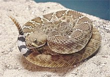
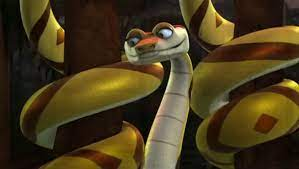

Serpiente de Cascabel

Su hábitat varía, dependiendo de la región: ocupan vertientes montañosas con salientes escarpados, afloramientos rocosos en bosques caducos primarios y secundarios (en el Midwest), acantilados escarpados, cauces de ríos, pantanos y llanuras anegadas del sur, la mayoría de las especies de serpientes de cascabel son nocturnas, se esconden durante el día pero salen por la noche o al atardecer para cazar a sus presas, y suelen alimentarse de pequeños mamíferos, sobre todo roedores, pero también aves y lagartos.
- Cascabeles en el extremo de la cola.
- Las serpientes de cascabel pueden medir hasta 8 pies (2.5 m) de largo
- Es posible que las serpientes jóvenes solo tengan un cascabel, por lo cual no producen el sonido de cascabeleo.
- Marcas con forma de diamante, manchas o motas en la parte dorsal.
- En situaciones de peligro las serpientes de cascabel se suelen enrollar y poner el cuello en forma de "S" para poder atacar más velozmente, con su cola emiten un sonido de aviso.

Pagina Principal